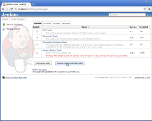
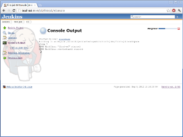
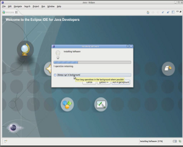
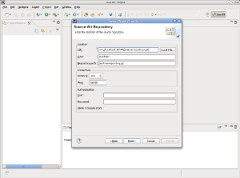

Jenkins : Jenkow Activiti Designer Setup
Created by Unknown User (m2spring), last modified on Mar 06, 2013
Operation |
Needed When |
Clip
(Length) |
Steps |
1. Install Jenkow Plugin |
once for every
plugin release |

(3:35) |
- Install or update the Jenkow plugin from the update center.
|
2. Run a first Job |
one time |

(1:42) |
- To create an initial workflow definition we can edit later.
|
3. Prepare Eclipse |
one time |

(4:43) |
- Optionally: Get Eclipse
- Install EGit
- In Eclipse: Help > Eclipse Marketplace... > Find: egit > Install
> ...
- No need to restart Eclipse (will be done after installing Jenkow)
- Install Jenkow:
- On Jenkins main page: "Eclipse Update Site" link > copy eclipse.site URL to clipboard
- In Eclipse: Help > Install New Software... > Add...
> Name: Jenkow, Location: paste eclipse.site URL from clipboard > OK
> ...
Restart Eclipse
|
4. Import Workflows |
one time |

(3:35) |
- In Jenkins main page: "Jenkow" link
> copy ssh Git URI to clipboard
- In Eclipse: File > Import... > Git > Projects from Git > Next
> URI > Next
> Location URI: paste Git URI from clipboard > Next
> Branch: check "master" > Next
> Destination: ... > Next
> If "Working Directory" element is empty, Back-Next fixes it (EGit bug?) > select "jenkow-workflows" > Next
> Finish
- Project Explorer: expand "jenkow-workflows" > expand "src/main/resources" > expand "diagrams" >
> double-click "first-wf.bpmn"
|
5. Modifying Workflows |
recurring |

(5:11) |
- In Eclipse
- Modify task
> In workflow editor: select "Script Task"
> Select "Properties" tab, select "Main config" sub-tab
> Modify "Script" field
> File > Save
- Commit changes
> In Project Explorer: Right-click "jenkow-workflows" project
> Team > Commit... > enter Commit message > Commit
- Push changes
> In Project Explorer: Right-click "jenkow-workflows" project
> Team > Push to Upstream > OK
- In Jenkins: run job to see changes become effective
|
{kind=link}
{kind=link}
{kind=link}
{kind=link}
{kind=link}